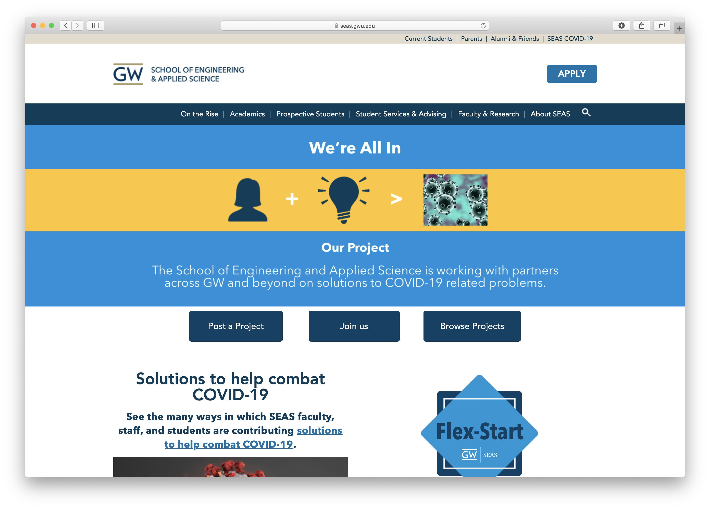
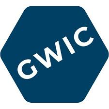
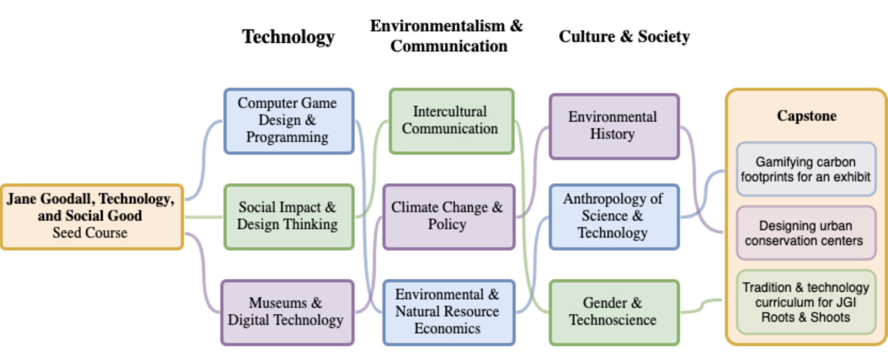
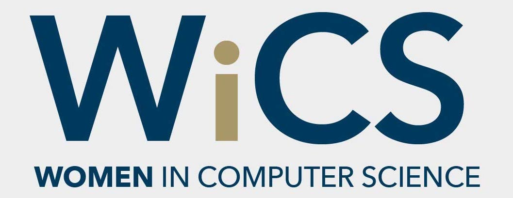
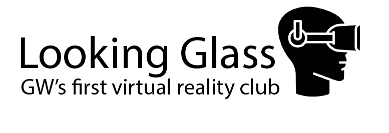

COVID-19 GW School of Engineering & Applied Science Banner

March 2020
Created a hero for the GW School of Engineering and Applied Science homepage to direct site
GW Innovation Center (GWIC)

Technology Fellow
September 2018 - Present
As a Technology Fellow, I collaborate on and manage various student-lead projects at the GW Innovation Center which integrate design, technology, ideation and social impact. I help run the GWIC, the first physical space on campus which provides students a creative environment dedicated to cross-disciplinary social innovation and entrepreneurial thinking. Through the GWIC, I have worked on projects including Virtual Jane, a VR educational app for the Jane Goodall Institute, the proposal for a Technology for Social Good Curriculum at GWU, and a booth design representing GW's School of Engineering and Applied Science at SXSW EDU Conference 2020.
SXSW Booth
January 2020 – March 2020
Designed and created an interactive booth to advertise GW's School of Engineering and Applied Science that was to be presented at SXSW EDU Conference 2020. Included the build of a 6 ft monument structure, interactive map activity and Instagram photo wall. Project not complete due to COVID-19 pandemic.
GW Minor Curriculum Program

August 2019 – May 2020
Initiated a design & technology for social good curriculum program at the George Washington University after discovering a lack of study options in this crossed discipline on campus. I help collect student data about their interest in the curriculum, as well as liaison between the student team and GW faculty to help take steps in bringing this program to GW
Women in Computer Science

Co-Chair (Dec 2019 – Pres), Secretary (May 2019 – Nov 2019), Freshman Rep (Sept 2018- May 2019)
September 2018 - Present
Immediately after arriving on campus, I sought out WiCS for a community where I could bond with other females in my field of study. Collectively, WiCS holds open study hours, facilitates a mentorship program, hosts panels and workshops, helps women gain new connections with companies for internships and jobs, and sends members to the Grace Hopper Conference each year. As an e-board member for 3 years, I’ve helped recruite new members and plan events through outreach to the WiCS and the larger GW community in order to take part in building a stronger community for women in computer science.
Looking Glass | GW's First VR Club

Vice President, Co-Founder
August 2019 – Present
Looking Glass serves to expose members to the business, programming, and design aspects of a technology startup, particularly through Virtual Reality. I help lead weekly educational sessions on design techniques, UI/UX principles, marketing, and 3D modelling to club members.
Unity Game
Modeled and programmed interactive game in Unity that can be played in a VR headset or on a computer. Game has features including re-spawning, physics, point accumulation, checkpoints and more.